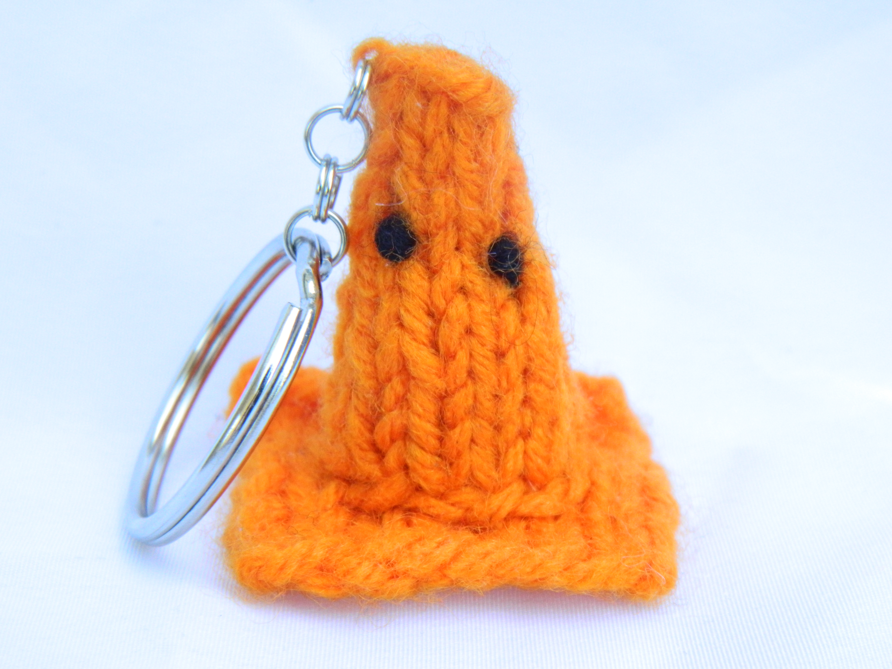

Ethos
Meet Agnes...
As a creative, it’s basically in my job description to be inspired. That is the ultimate state of pure positive potential, and it’s where a lot of the best ideas come from.
I am majoring in Creative Advertising, with Interactive Media and Art as minors. This website was made for one of my interactive media classes. Being an advertising major meant I was learning graphic design concepts and the practical application of it-advertising. As I advanced in my studies, something dawned on me.
Advertising is mind hacking.
...Mind Hacker
The famous group of hackers known as Anonymous use their programming skills to hack the programs that run the software. Everyone feels their influence. Like when they shut down BART's website after it blocked cell service to stop protests in San Francisco.
They said they would not tolerate "an act of cellphone censorship".
Advertising hacks into the minds of the audience with the goal of influencing the outcome to their favor. It uses techniques to change the script running in the heads of the target audience.
At Your Service.
Background
I’m from Texas. My family originates from Cross River State in Calabar, Nigeria. This is my portfolio site. Feel free to explore to your heart's content. I made it just for that purpose.
I grew up in a fictional sounding place called Sugar Land. It’s a quickly growing suburb right outside of Houston. I’m pretty sure I was creative right from the womb. I have been making things as far back as I can remember.
In fourth grade, I taught myself how to knit. I didn’t think it was a big deal because it’s not like I invented the craft, but people seemed surprised whenever I told them I learned from a book I ordered from a Scholastic catalog.
This is a banner from an Etsy shop I created in high school with my knitted blanket as a background.
Then I authored my first comic book and went to show my friends in class. They told me they didn’t understand what was going on, but still laughed and smiled with me anyway. I never forgot how that made me feel. That was the start.
Mission
Now, I get inspired by films like Spirited Away, stories like Steve Jobs, or campaigns like the Dove Campaign for Real Beauty. They touch a part of me that positively ripples into my life. They make me want to do something impactful in this world, and believe that I actually can.

Like Anonymous does with software programs, I use my design and advertising skills to change the script. I'm not just an advertising student, I am a design hacker. I want to use my skills to influence the world for the better.
My site logo, of an alien, is a play on the Guy Vivaldi mask that Anonymous is represented by. I am Agnonymous.
Inquiries
Feel free to contact me at: aea67@miami.edu
My Behance profile is here
My LinkedIn profile is here